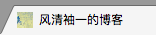

注：本文专门用于记录在使用Hexo博客过程中遇到的一些（奇葩的）问题。
favicon不显示
当我们在搭建Hexo博客的时候，必然会自定义favicon.ico，显示在网页选项卡的左上角，如图所示：

设置favicon也很简单，只需要在主题配置文件（_config.yml）中，进行如下操作即可：
|
|
如果favicon的路径设置正确，而且清除了缓存，刷新了页面好几次，但favicon仍然不显示的话，可以等待一段时间，再去刷新，可能就会显示了！
404问题
现象：从首页点击某篇文章跳转到了404页面！
分析：既然出现了404页面，那么必定是路径问题；仔细检查路径发现，原来是以前名为mou.md的文件，现在变成了Mou.md。所以在github上路径中文件夹的名字仍然是mou，而不是Mou。
解决：本来以为只需要执行以下命令就可以了：
|
|
后来发现自己还是太年轻了，因为hexo clean的只是本地的文件，和github完全没有关系，之后想了半天也毫无头绪，于是另辟蹊径：将Mou.md文件再重命名一下，如Mou2.md，执行上述命令之后，再重命名回Mou.md，再执行上述命令就可以了。😄
总结：当我在重命名md文件时，切忌不可只是进行了大小写转换，因为像这样把文章部署到github上之后，文件名对应的文件夹是不会发生变化的！！！
版权声明

本网站如未注明，均由青峰创作并维护；本网站采用知识共享署名-非商业性使用-相同方式共享 4.0 国际许可协议进行许可。转载请注明作者及出处。
本文永久链接：https://fengqingxiuyi.github.io/2016/08/14/MGHN/Mac+GitHub+Hexo+NexT使用注意点/